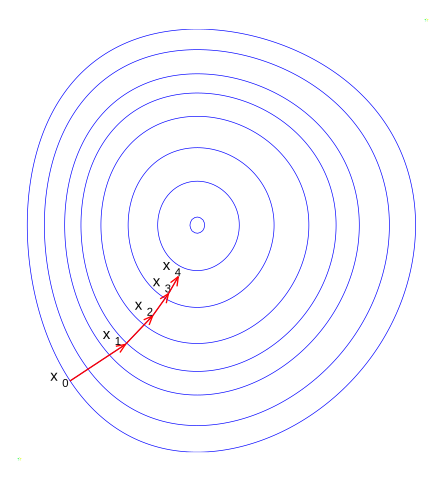
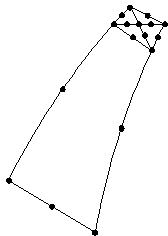

From damping factor to learning rate
1 My journey in the land of Machine Learning
When I first heard about machine learning in the middle of the 2010s, it occurred as a big black box for me. I have a PhD in computational material science, and as such, find the concepts quite easy to grasp. Yet, I am often stunned how similar yet how different the fields are.
The core difference is that people in these fields receive different training and have developed aptitudes for different terms and jargon.
I often find the ML jargon difficult to understand. However, once you get your head around it, it actually becomes easier to understand.
Before getting deeper in the field, I found it hard to accept the pretentious term of learning.
How were systems supposed to learn, as we humans learn? When you scratch the surface, you clearly recognize that the learning is an optimization algorithm.
In this blog I want to focus on the particular technical term of the learning rate. From the outside, this is the rate of learning of our algorithm. But what does it mean for the mathematically learned fellow? Especially, what does it mean to all the computational scientists?
In the following, I will contrast the concept in ML with the very similar approach in the finite element method, known too many physical computational scientists.
2 FEM
2.1 Background
The Finite Element Method (FEM) began in the 1940s for aerospace structural analysis and grew with computing advances in the 1950s–60s. It works by breaking down complex structures into smaller, manageable elements, solving equations over these elements, and assembling the results. Today, FEM is vital in simulating real-world physics across engineering and science.
2.2 FEM and the step size in line search
In mechanical application of the finite element method, we are interest to solve the equation: \[\mathbf{K} \mathbf{u} = \mathbf{f}_{\text{ext}}\]
where:
- \(\mathbf{K}\) is the global stiffness matrix.
- \(\mathbf{u}\) are the nodal displacements (unknowns).
- \(\mathbf{f}_{\text{ext}}\) are the nodal forces.
The residual is \(\mathbf{r}=\mathbf{f}_{\text{ext}}-\mathbf{K}\mathbf{u}\).
A gradient-descent-based update rule takes the form:
\[ \mathbf{u}_{t+1} = \mathbf{u}_t - \alpha (\mathbf{K} \mathbf{u}_t-\mathbf{f}_{\text{ext}}) \]
where \(\alpha\) is the step size or damping factor, which controls update magnitude.
In a linear system we can use a potential to describe this
\[\nabla_{\mathbf{u}} \Pi=\mathbf{K} \mathbf{u}_t-\mathbf{f}_{\text{ext}}\]
so we get
\[ \mathbf{u}_{t+1} = \mathbf{u}_t - \alpha \nabla_{\mathbf{u}} \Pi \]
An illustration is in the following picture.

If computational resources allow and the matrix \(\mathbf{K}\) is not too large, a direct solution can be obtained using:
\[\mathbf{u} = \mathbf{K}^{-1} \mathbf{f}_{\text{ext}}\]
In this document I use \(\mathbf{x}\) for a vector and \(\mathbf{X}\) for a matrix.
2.3 Influence of Nonlinearity
For linear mechanics, the solution is straightforward. The issue arises only when we introduce non-linearity.
Nonlinearities arise from
- large displacement paths,
- large rotations
- energy dissipating process (plasticity)
- damping
In the presence of large displacements, these non-linearities lead to ill-conditioning of the matrix \(K\). A tiny step size would be necessary unless matrix K is adapted. Many solution algorithms exist.
\[\mathbf{u}_{t+1} = \mathbf{u}_t + \alpha_t \mathbf{K}^{-1} \mathbf{r}_t\]
We find the optimal \(\alpha_t\) by minimizing the strain energy functional.
\[\alpha_t = \arg\min_{\alpha} J(\mathbf{u}_t - \alpha \mathbf{K}^{-1} \mathbf{r}_t)\]
One major issue is that the stiffness matrix is variable, there is only a tangent stiffness matrix, \(\mathbf{K}_t\), which requires frequent recomputation. This tangent matrix is also called in more general terms the Hessian, which describes the second-order curvature. We will not get into the details here, but we will get back to it below.
The following picture shows geometry as one of the ill-conditioning causes. One element is a lot bigger than the other.
.
Here’s an example of an ill-conditioned matrix:
\[\mathbf{K} = \begin{bmatrix} 10 & 10 \\ 10 & 10.0001 \end{bmatrix}\]
This matrix has a high condition number, making it sensitive to small changes in input, which can lead to large errors in numerical computations.
3 Machine learning
3.1 Linear models
Machine learning began with linear models like the equation:
\[\mathbf{y}=\mathbf{X}\mathbf{w}+\mathbf{b}\].
It draws from statistics and early perceptron models of the 1950s.
Here
- \(\mathbf{y}\) is the vector of output labels (dependent variable)
- \(\mathbf{X}\) is the feature matrix, the input data, or independent variable
- \(\mathbf{w}\) are the weights(model parameters)
- \(\mathbf{b}\) are biases, which we can include in w
You can write this as: \[\mathbf{X}\mathbf{w}=\mathbf{y}\]
A direct solution equivalent to the FEM equation
\[\mathbf{u} = \mathbf{K}^{-1} \mathbf{r}\]
is the equivalent least squares solution is:
\[\mathbf{w} = (\mathbf{X}^T \mathbf{X})^{-1} \mathbf{X}^T \mathbf{y}\]
where (\(\mathbf{X}^T \mathbf{X})^{-1}\) is like the inverse of the stiffness matrix, \(\mathbf{K}^{-1}\) .
3.2 Influence of size and non-linearity
However, ML problems usually have many more parameters than than FEM problems. This brings a few drawbacks for the direct solution.
- matrix inversion is costly and works at \(O(n^3)\) in time.
- and requires \(O(n^2)\) in space.
- correlated features, can lead to near-singular matrices making inversion impossible.
In addition, it would only work for linear problems, whereas many issues are non-linear, expressed as:
\[\mathbf{y} = f(\mathbf{X}, \mathbf{w})\]
where - \(\mathbf{y}\) is the output vector - \(f(\mathbf{X}, \mathbf{w})\) is a general function
Development has focused on iterative methods. Here, the same solvers exist as for FEM: gradient descent, conjugate gradient, or L-BFGS. Mini-batches solve the space requirement issue by analyzing only a small subset. This is then called stochastic gradient descent.
3.3 Gradient descent
Instead of direct inversion, ML often uses gradient descent``, similar toiterative solvers in FEM` (like conjugate gradient method):
\[\mathbf{w}_{t+1} = \mathbf{w}_t - \alpha \nabla J(\mathbf{w}_t)\],
where \(J(\mathbf{w})\) is the loss function (analogous to potential energy in FEM). Now \(\alpha\) is the learning rate, but you can see the equation is identical to the FEM equation.
In our analogy, the stiffness matrix \(\mathbf{K}\) is replaced by the loss function. A common choice for regression problems is the Mean Squared Error (MSE):
\[J(\mathbf{w}) = \frac{1}{N} \sum_{i=1}^{N} (y_i - \mathbf{X}_i \mathbf{w})^2\]
where:
- \(N\) is the number of samples.
- \(y_i\) is the true label.
- \(\mathbf{X}_i\) is the feature vector (row) for sample i in the matrix.
The gradient of the loss function is:
\[\nabla J(\mathbf{w}) = -\frac{2}{N} \sum_{i=1}^{N} (y_i - \mathbf{X}_i \mathbf{w}) \mathbf{X}_i\]
For more complex problems, first order gradient descent is not enough, we need second order approaches. We examine the curvature and then it is called the Hessian. But again, as for FEM, this is too complex for this article.
3.4 Batch size
As already mentioned, ML problems use a lot of parameters and a lot of data. The size of the data, which is filled in the matrix is called the batch. Using a batch size smaller than the full data is called a mini-batch. We then use a stochastic gradient descent. It is called stochastic as we use a sample of the full data.
In theory, the mini-batch can go down to 1. In practice this is rare.
\[\mathbf{w}_{t+1} = \mathbf{w}_t - \alpha \frac{1}{|B|} \sum_{i \in B} \nabla J_i(\mathbf{w}_t)\]
where
- \(|B|\) is the batch size
- \(\nabla J_i\) is the evaluation of the loss function for the batch sample
This approach of divide and conquer is a classic in computer science. In the FEM similar approaches have been developed for large-scale problems, see for example the PGD and other reduced order modeling techniques.
3.5 The learning rate, limits progress
We have previously examined analogies between many optimization equations. One concept that remains to be discussed is the damping factor—a critical component in both numerical methods and machine learning.
Returning to the idea of line search, we can observe that a similar approach to what is used in FEM can also be applied in machine learning. In this context, the learning rate becomes variable, adapting at each iteration to minimize the objective function along the descent direction:
\[\alpha_t = \arg\min_{\alpha} J(\mathbf{w}_t - \alpha \nabla J(\mathbf{w}_t))\]
For small to medium ml problems, this is an excellent solution. This approach ensures a stable convergence of the training process. The issue is that each extra forward/backward pass doubles cost. If your package offers “line search”, this is often backtracking or heuristic scaling.
For deep learning tasks, inventive folks have come up with explicit prescriptive updates, like the ADAM optimizer. It handles the update rate for each parameter solely based on the gradients.
\[m_t = \beta_1 m_{t-1} + (1 - \beta_1) \nabla J(\mathbf{w}_t)\]
\[v_t = \beta_2 v_{t-1} + (1 - \beta_2) (\nabla J(\mathbf{w}_t))^2\]
\[\mathbf{w}_{t+1} = \mathbf{w}_t - \frac{\alpha m_t}{\sqrt{v_t} + \epsilon}\]
where:
- \(m_t\) is the moving average of gradients (momentum-like behavior).
- \(v_t\) tracks the moving average of squared gradients (scales learning rates).
- \(\beta_1\) and \(\beta_2\) control exponential decay rates.
For the FEM guys reading this: this approach resembles explicit dynamics mass scaling of the time step. There, we calculate the permissible step size for each element and then add any artificial mass to each element. This artificial mass brings the global step size to a desired target.
Numerically, the approaches differ. Some ensure convergence directly or iteratively; others use update rules and heuristics.
Iterative solvers, such as BFGS and L-BFGS, still have their place in more specialized fields that have higher demands on accuracy or suffer from greater instability.
The major advantage is that L-BFGS can converge faster than SGD.
People use it on classic ML problems, with datasets that fit in memory, that is no mini-batch and especially reinforcement learning to handle the instabilities better.
Another field where a BFGS could be better is fine tuning, small networks, hyper parameter optimization, and word embeddings.
The field of machine learning is much less mature than FEM, in terms of terminology and also in the development of new numerical methods.
4 Final comparison
We explored the basics of both fields and pointed out analogies. The analogies often stem from the fact that the underlying optimization math was used. If you are deeped interested in the basics, start here.
Here is a final comparison table
| FEM | ML |
|---|---|
| Damping / time step \(\alpha\) | Learning rate \(\alpha\) |
| Load vector \(\mathbf{f}_{\text{ext}}\) | Labels \(\mathbf{y}\) |
| Displacements \(\mathbf{u}\) | Parameters \(\mathbf{w}\) |
| Residual \(\nabla_{\mathbf{u}} \Pi=\mathbf{K} \mathbf{u}_t-\mathbf{f}_{\text{ext}}\) | Gradient \(\nabla J(\mathbf{w})\) |
| Tangent Stiffness matrix \(\mathbf{K}_t\) | Hessian / curvature of loss \(\mathbf{H}\) |